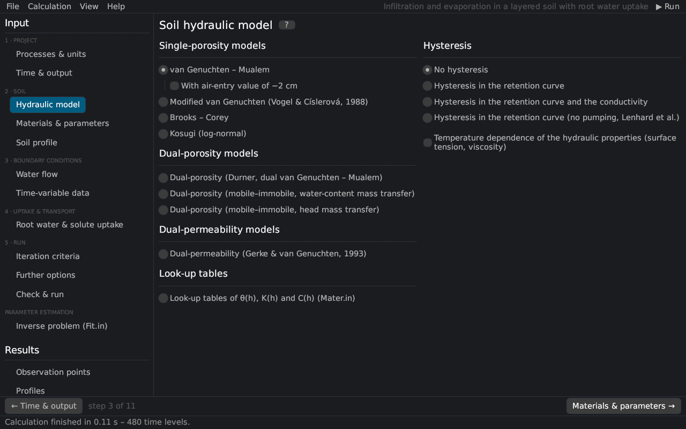

Soil hydraulic model
The page follows the Soil Hydraulic Model dialog of HYDRUS-1D 4.17: the model of the soil hydraulic properties on the left, hysteresis on the right.


Hydraulic models
| Model | Description |
|---|---|
| van Genuchten – Mualem | The standard model van Genuchten (1980); Mualem (1976). With air-entry value of −2 cm the retention curve starts at hs = −2 cm, which improves the conductivity near saturation for fine soils with n close to 1 Vogel et al. (2001); Schaap and van Genuchten (2006). |
| Modified van Genuchten | Extra flexibility near saturation with θm, θa, θk and Kk Vogel and Císlerová (1988). |
| Brooks – Corey | Retention with a sharp air-entry value Brooks and Corey (1964). |
| Kosugi (log-normal) | Log-normal pore-size distribution Kosugi (1996). |
| Dual-porosity (Durner) | Bimodal retention curve as the sum of two van Genuchten curves Durner (1994); one flow equation. |
| Dual-porosity (mobile–immobile), water-content or head mass transfer | Flow in the mobile region with exchange to an immobile region Šimůnek et al. (2003); see dual-porosity models. |
| Dual-permeability | Two flowing domains, fractures and matrix Gerke and van Genuchten (1993a); see dual permeability and below. |
| Look-up tables | θ(h), K(h) and C(h) from tables (Mater.in of a HYDRUS-1D project). |
The equations are given in soil hydraulic property models; the parameters are entered on the page Materials & parameters.
Hysteresis
| Option | Description |
|---|---|
| No hysteresis | One retention curve (main drying curve). |
| Hysteresis in the retention curve | Scanning curves between the main drying and the main wetting curve after Kool and Parker (1987); extra parameters θm, θs,w and αw. |
| Hysteresis in the retention curve and the conductivity | Also K(h) is hysteretic; extra parameter Ks,w. |
| Hysteresis in the retention curve (no pumping, Lenhard et al.) | Model that keeps track of the reversal points and avoids the drift of scanning loops ("pumping") Lenhard et al. (1991); Lenhard and Parker (1992). |
| Initially drying / wetting curve | Branch of the initial condition (iKappa = −1 / +1). |
See hysteresis for the equations.
Initial hysteresis state (Hysteresis.in)
With Kool–Parker hysteresis the state of a soil is more than its pressure heads: each node lies on a scanning curve that depends on its history. The state can be taken from a previous run: Soil profile → Initial h → Restart from these results sets the heads and the hysteresis state (water contents, branches and conductivities) of all nodes at a print time. HYDRUS reads this state from the file Hysteresis.in, which Rusteau reads and writes with HYDRUS-1D projects. The page shows how many nodes are on a wetting or drying branch; Clear returns to the main curve chosen above. The state is dropped when the profile gets new nodes.
Temperature dependence
Temperature dependence of the hydraulic properties scales the pressure head with the surface tension and the conductivity with the viscosity and density of water at the soil temperature Constantz (1982); Philip and de Vries (1957); it requires heat transport (temperature dependence).
Dual-permeability parameters
With the dual-permeability model the page shows the parameters of the fracture–matrix interface (they are not stored in HYDRUS-1D projects):
| Input | Description |
|---|---|
| Fracture volume fraction w | Volume of the fracture domain relative to the soil, the same for all layers. |
| Distribute boundary fluxes … (f = w) | Prescribed boundary fluxes are split in proportion to the volumes; otherwise give the fraction entering the fractures. |
| Dual porosity inside the matrix | Mobile and immobile matrix water with water-content (ωw) or pressure-head driven transfer. |
| β | Shape factor of the matrix blocks (3 for slabs) Gerke and van Genuchten (1996). |
| γw | Scaling coefficient of the water transfer, 0.4 Gerke and van Genuchten (1993b). |
| a | Effective diffusion path length (half width of the blocks) [L]. |
| Kas | Saturated conductivity of the interface; 0 = matrix Ks. |
| l (matrix) | Pore connectivity of the matrix. |
| θr, θs, α, n immobile, Ks interface, ωw | Parameters of the immobile matrix region. |
On the page Materials & parameters the primary columns then describe the fracture domain and the extra columns θr,m, θs,m, α_m, n_m, Ks,m the matrix.
Literature cited in this topic
- Brooks, R. H., and A. T. Corey (1964). Hydraulic Properties of Porous Media. Hydrology Paper No. 3, Colorado State University, Fort Collins, CO, 27 pp.
- Constantz, J. (1982). Temperature dependence of unsaturated hydraulic conductivity of two soils. Soil Science Society of America Journal 46(3): 466–470. doi:10.2136/sssaj1982.03615995004600030005x
- Durner, W. (1994). Hydraulic conductivity estimation for soils with heterogeneous pore structure. Water Resources Research 30(2): 211–223. doi:10.1029/93WR02676
- Gerke, H. H., and M. Th. van Genuchten (1993a). A dual-porosity model for simulating the preferential movement of water and solutes in structured porous media. Water Resources Research 29(2): 305–319. doi:10.1029/92WR02339
- Gerke, H. H., and M. Th. van Genuchten (1993b). Evaluation of a first-order water transfer term for variably saturated dual-porosity flow models. Water Resources Research 29(4): 1225–1238. doi:10.1029/92WR02467
- Gerke, H. H., and M. Th. van Genuchten (1996). Macroscopic representation of structural geometry for simulating water and solute movement in dual-porosity media. Advances in Water Resources 19(6): 343–357. doi:10.1016/0309-1708(96)00012-7
- Kool, J. B., and J. C. Parker (1987). Development and evaluation of closed-form expressions for hysteretic soil hydraulic properties. Water Resources Research 23(1): 105–114. doi:10.1029/WR023i001p00105
- Kosugi, K. (1996). Lognormal distribution model for unsaturated soil hydraulic properties. Water Resources Research 32(9): 2697–2703. doi:10.1029/96WR01776
- Lenhard, R. J., and J. C. Parker (1992). Modeling multiphase fluid hysteresis and comparing results to laboratory investigations. In: M. Th. van Genuchten, F. J. Leij, and L. J. Lund (eds.), Proc. Intl. Workshop on Indirect Methods for Estimating the Hydraulic Properties of Unsaturated Soils, University of California, Riverside, CA, pp. 233–248.
- Lenhard, R. J., J. C. Parker, and J. J. Kaluarachchi (1991). Comparing simulated and experimental hysteretic two-phase transient fluid flow phenomena. Water Resources Research 27(8): 2113–2124. doi:10.1029/91WR01272
- Mualem, Y. (1976). A new model for predicting the hydraulic conductivity of unsaturated porous media. Water Resources Research 12(3): 513–522. doi:10.1029/WR012i003p00513
- Philip, J. R., and D. A. de Vries (1957). Moisture movement in porous materials under temperature gradients. Transactions, American Geophysical Union 38(2): 222–232. doi:10.1029/TR038i002p00222
- Schaap, M. G., and M. Th. van Genuchten (2006). A modified Mualem–van Genuchten formulation for improved description of the hydraulic conductivity near saturation. Vadose Zone Journal 5(1): 27–34. doi:10.2136/vzj2005.0005
- van Genuchten, M. Th. (1980). A closed-form equation for predicting the hydraulic conductivity of unsaturated soils. Soil Science Society of America Journal 44(5): 892–898. doi:10.2136/sssaj1980.03615995004400050002x
- Vogel, T., and M. Císlerová (1988). On the reliability of unsaturated hydraulic conductivity calculated from the moisture retention curve. Transport in Porous Media 3: 1–15. doi:10.1007/BF00222683
- Vogel, T., M. Th. van Genuchten, and M. Císlerová (2001). Effect of the shape of the soil hydraulic functions near saturation on variably-saturated flow predictions. Advances in Water Resources 24(2): 133–144. doi:10.1016/S0309-1708(00)00037-3
- Šimůnek, J., N. J. Jarvis, M. Th. van Genuchten, and A. Gärdenäs (2003). Review and comparison of models for describing non-equilibrium and preferential flow and transport in the vadose zone. Journal of Hydrology 272(1–4): 14–35. doi:10.1016/S0022-1694(02)00252-4
All sources: References.